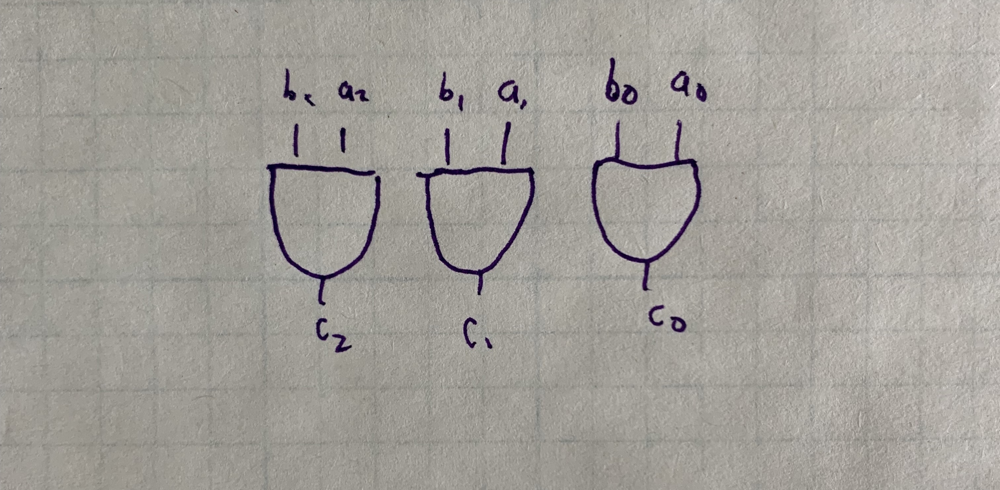
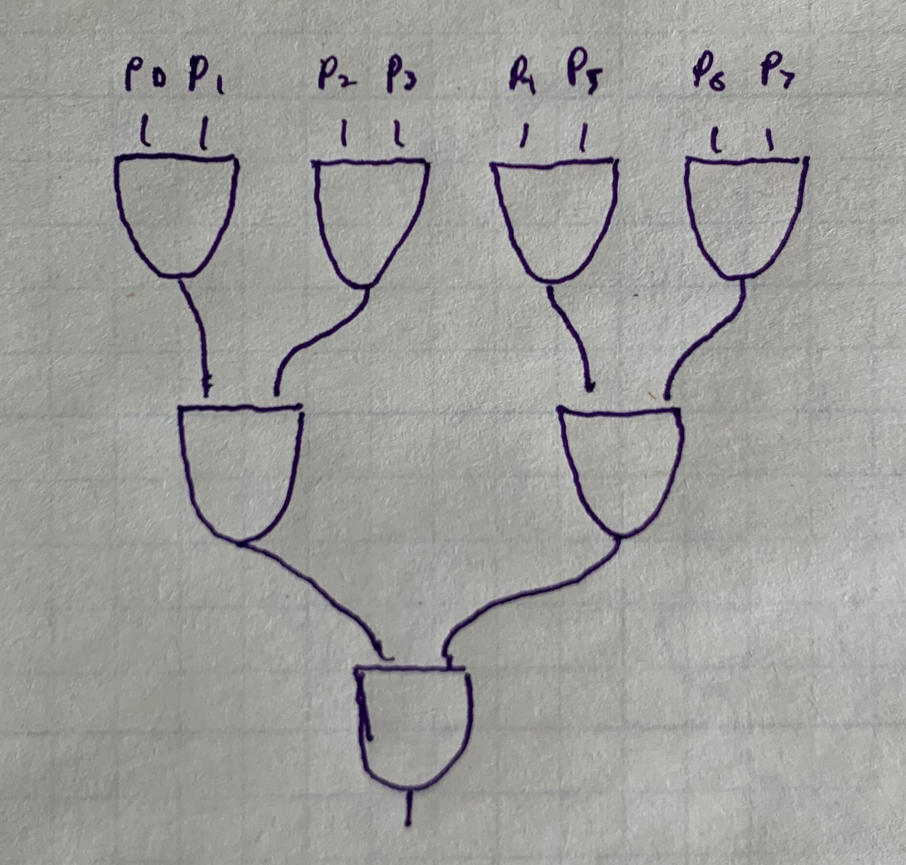

The elementary school addition algorithm works for binary numbers 1:
1 1 1 1 1 (carried digits)
0 1 1 0 1
+ 1 0 1 1 1
-------------
= 1 0 0 1 0 0 = 36It works in binary (or any base) because the sum of any 3 single-digit numbers is at most two digits.
The time complexity is O(n): we need to result of the previous
iteration before we can correctly compute the
sum of the current iteration2.
In certain software-based model of computation, adding can never
be faster than O(n) because we need to read each pair of bits
sequentially.
Hardware provides an alternative model with natural parallelism.
The value of each bit in an n-bit number is stored on a wire.
Wires connect to circuits gates which transform the input to
zero or one. All wires are transformed simultaneously,
not one at a time.
For example, let’s compute the bitwise AND of two n-bit numbers a and b
by connecting their bit-wires to an AND gate:

To calculate the time complexity of this operation, we look at the
height of the circuit diagram. In this case, the height is
independent of n, the number of bits.
Therefore, bit-wise AND can be calculated in O(1) constant time.
The trade-off is the space complexity, analogous to memory complexity
in the software model. The space complexity is proportional to the
number of gates used. We need an AND gate for each bit, so
the space complexity is O(n).
If we implement the elementary school adder in hardware,
the time complexity is still O(n). The parallelism doesn’t
help, because each circuit has to the wait for the previous
carry digit:
You can also think about it in terms of height like the last
example, where the top is the first bits \(a_0\) and \(b_0\)
and the bottom is \(s_3\). The height grows at O(n).
We can improve the algorithm by looking at the states that produce a carry.
If a AND b, then there will be a carry. If a OR b and there is a carry from
the last iteration, then there will be a new carry. These are called
generating and propagating carries respectively. We can summarize this
with symbols as follows:
\[ \begin{align*} c_{i + 1} &= a_i b_i + (a_i + b_i) c_i \\ c_{i + 1} &= g_i + p_i c_i \end{align*} \]
Let’s work out the 4-bit carries:
\[ \begin{align*} c_{1} &= g_0 + p_0 c_0 \\ c_{2} &= g_1 + p_1 c_1 \\ c_{3} &= g_2 + p_2 c_2 \\ c_{4} &= g_3 + p_3 c_3 \\ \end{align*} \]
At first, this doesn’t seem like an improvement, because each carry depends on the previous carry. But let’s substitute carries into \(c_4\):
\[ \begin{align*} c_{4} &= g_3 + p_3(g_2 + p_2 (g_1 + p_1 (g_0 + p_0 c_0))) \\ c_{4} &= g_3 + p_3g_2 + p_3 p_2 g_1 + p_3 p_2 p_1 g_0 + p_3 p_2 p_1 p_0 c_0 \end{align*} \]
The dominating term is \(p_3 p_2 p_1 p_0 c_0\),
with length proportional to n. Calculating this with
successive AND operations is still O(n). But we can
divide-and-conquer to calculate this in O(log n). For example:

Recall that the height of the circuit is the time complexity.
This circuit forms a binary tree (upside down),
which is known to have height O(log n).
Since \(p_3 p_2 p_1 p_0 c_0\) is the dominating term, the time complexity
of that operation is the time complexity of adding all the bits.
So the time complexity of adding two numbers is O(log n)!
The height a binary tree is O(log n) and the number of nodes
(the number of AND gates) is O(2^n).
This is very expensive in terms of hardware. Each AND gate costs
money and takes physical space on a circuit board.
This algorithm is not feasible for even relatively small n.
Because of the cost and physical space, carry-lookahead adders are not implemented for standard 32-bit integers.
The standard algorithm would require gates proportion to 32, while carry-lookahead would require 2^32 = 4,294,967,296.
Instead, carry-lookahead adders are implemented using 4-bit sections
and chained together. The time complexity is still O(n),
but with a constant factor speedup.
Example: https://en.wikipedia.org/wiki/Binary_number#Addition↩︎
Also known as the ripple carry adder.↩︎